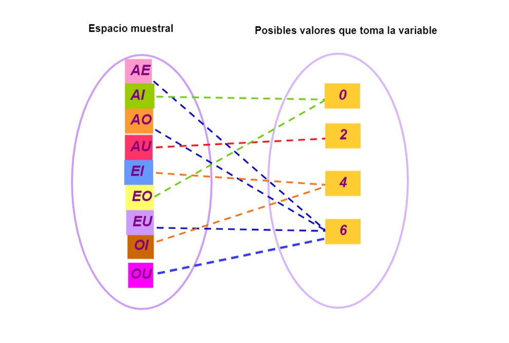

Podemos ver, cuáles son las posibles parejas de vocales que cada jugador puede coger, así como, la suma del valor de dichas vocales y el último dígito que tiene la suma:
Posibles resultados del experimento
AE
AI
AO
AU
EI
EO
EU
IO
IU
OU
Suma
6
10
16
22
14
20
26
24
30
36
Último dígito
6
0
6
2
4
0
6
4
0
6
Por ejemplo podría darse la siguiente jugada:
Jugador 1 : Coge dos cartas y resultan ser EO, y sumando el valor de las cartas obtenemos: 20.
Jugador 2: En su papel apuntó que el último dígito de la suma de las cartas sería un 0, por lo que gana un punto.
Variable aleatoria
Vemos que en este caso, los posibles últimos dígitos de sumar dos cartas cualesquiera son el: 0,2,4,6.
Podemos considerar la variable: \(X = \) último dígito de la suma del valor las dos cartas.
Podemos dar la tabla de frecuencias absolutas y relativas de la variable \(X \), que será:
Último dígito
0
2
4
6
Total
Frecuencia absoluta
3
1
2
4
10
Frecuencia relativa
\( \frac {3}{10} \)
\( \frac {1} {10} \)
\( \frac {2} {10} \)
\( \frac {4} {10} \)
1
Definición de variable aleatoria
Esta variable \(X \) recibirá el nombre de variable aleatoria. Una variable aleatoria será una aplicación que nos permitirá asociar un número real a un resultado de un experimento aleatorio a partir de ciertas reglas. Esta variable aleatoria, se denotará por \(X \), \(Y\) o \(Z \). Los posibles resultados de un experimento aleatorio se denotarán con la letra \( \Omega \).
En nuestro ejemplo, el conjunto \( \Omega \) se formará por las posibles parejas de cartas , es decir, \( \Omega = \{AE, AI, AO,AU,EI,EO,EU,IO,IU,OU \} \) . En este caso, tenemos que:

Definición de distribución de probabilidad
La distribución de probabilidad de una variable aleatoria asociada a un experimento aleatorio se corresponde con la el valor de las frecuencias relativas que obtenemos cuando repetimos el experimento un número muy grande de veces. Es decir, una distribución de probabilidad de una variable aleatoria será una función que a cada uno de los sucesos del experimento aleatorio le asignará una probabilidad.
Esto podemos verlo para el juego de las vocales. Supongamos que mi compañero y yo jugamos 5 rondas y obtenemos lo siguiente:
El jugador 1 saca las cartas A y E y el jugador 2 había predicho que saldría como último dígito un 0, por lo que ha fallado.
En la siguiente ronda el jugador 2 extrae las cartas O y A, y el jugador uno predice que el último dígito de la suma de las cartas es 6, por lo que gana un punto.
En la siguiente ronda el jugador uno extrae las cartas I y A, y el jugador dos predice que el último dígito de la suma de las cartas es 0, por lo que falla.
En la siguiente ronda el jugador dos extrae las cartas E y A, y el jugador uno predice que el último dígito de la suma de las cartas es 6, por lo que gana un punto.
En la ronda el jugador uno extrae las cartas E y U, y el jugador dos predice que el último dígito de la suma de las cartas es 6, por lo que gana un punto.
Elección de las cartas
AE
OA
IA
EA
EU
Suma del valor de las cartas
6
16
10
6
26
Último dígito
6
6
0
6
6
Las frecuencias relativas y absolutas asociadas a la variable \(X \) son:
Último dígito
0
2
4
6
Frecuencia absoluta
1
0
0
4
Frecuencia relativa
1/5
0
0
4/5
Cualquier experimento finito que hagamos de nuestro juego nos ofrecerá una distribución de probabilidad similar a la que aparece en la tabla superior, pues no siempre vamos a obtener todos los resultados posibles, es decir, vemos que las frecuencias relativas y absolutas que aparecen son diferentes a las que se muestran en la tabla del principio de esta página, la razón:
En la tabla del principio hemos considerado TODOS las posibles parejas de cartas que podemos obtener !si jugáramos durante cientos de partidas o infinitas!. Si jugásemos un número finito y suficientemente grande de veces a nuestro juego podríamos obtener todas las parejas de cartas y así veríamos cómo las frecuencias relativas oscilan y se acercan a las probabilidades teóricas que aparecen en la primera tabla de esta sección.
Por ello, ! debemos considerar todos los resultados de nuestro experimento si queremos obtener la distribución de probabilidad de una variable aleatoria.